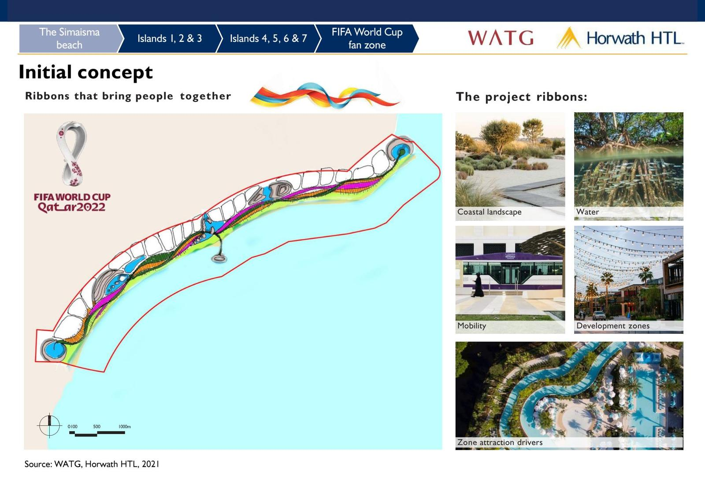

Simaisma Beach and Lusail Islands
Tourism development · Lusail, Qatar
Concept work for Simaisma Beach and the Lusail islands in Qatar, prepared in 2021 with WATG and Horwath HTL.
Lusail: Lusail is the third-largest city in Qatar after Doha and Al-Rayyan, and serves as an important economic hub. Source
Partners
 Horwath HTL
Horwath HTL